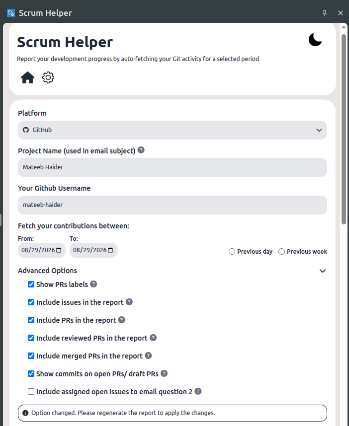

Visual Interface Showcase
Crisp UI built to look native across different environments.


Scrum Helper is an official FOSSASIA utility that connects securely to your Git activity, pulling commits, pull requests, issues, and code reviews into a structured daily update. Save hours of manual compilation.

Engineered specifically to save developers from manual sprint reporting exhaustion.
Query multiple repositories instantly. No more manual search filters across different projects to see what you committed.
Cross-compatible with GitHub, GitLab, and Codeberg API schemas. Consolidate your work regardless of where the code is hosted.
Extremely fast, lightweight standalone app built on Rust and Tauri. Native UI wrapper with minimal RAM and CPU utilization.
Access the tool directly inside your browser side panel. Pre-compiled extensions ready for Chrome, Firefox, and Opera.
Customize report headings, add private comments, and structure text dynamically before exporting.
Zero server collection. All API keys and preferences are kept inside local browser storage or native app settings.
Run Scrum Helper natively. Downloads are compiled from our official source code.
Download the official native client installer to run Scrum Helper seamlessly in your background.
Run Scrum Helper directly inside your browser side panel.
Crisp UI built to look native across different environments.